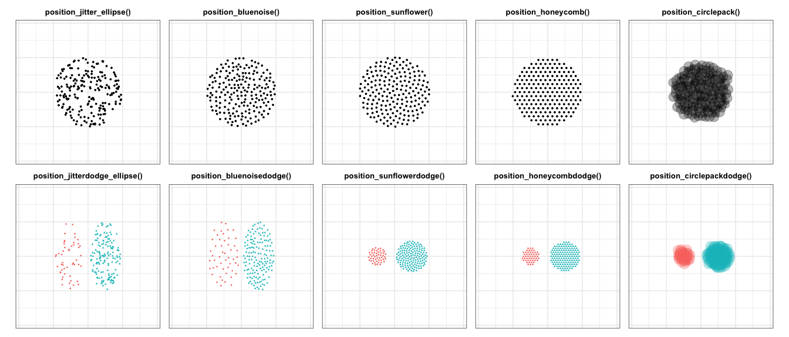

The goal of vayr is to provide ggplot2 extensions that foster “visualize as you randomize” principles. These principles are outlined in detail in “Visualize As You Randomize: Design-based Statistical Graphs for Randomized Experiments,” a chapter in Advances in Experimental Political Science (PDF, DOI). The package includes position adjustments that avoid over-plotting, which helps organize “data-space” to better contextualize statistical models.
Installation
The release version of vayr can be installed from CRAN, and the development version can be installed from GitHub using a package like remotes, devtools, or pak. vayr relies on ggplot2, packcircles, and withr, so these must be installed as well.
# From CRAN
install.packages("vayr")
# From GitHub
# install.packages("pak")
pak::pak("acoppock/vayr")Position adjustments
vayr provides ten position adjustments that apply to “point-like” geoms such as geom_point() and geom_text(). They come in pairs, one that arranges over-plotted points and one that also dodges groups side-to-side:
-
position_jitter_ellipse()andposition_jitterdodge_ellipse()sample from an elliptical field rather than the rectangle thatposition_jitter()uses, so the dispersion retains the impression of a single point. -
position_bluenoise()andposition_bluenoisedodge()fill the same elliptical field, but space the points evenly. Sampling uniformly leaves knots and voids a reader can mistake for structure; this leaves none while still looking unstructured. -
position_sunflower()andposition_sunflowerdodge()arrange over-plotted points in a sunflower pattern, working from the inside out in the order of the data. A point with nothing over-plotting it stays where it is. -
position_honeycomb()andposition_honeycombdodge()do the same on a hexagonal lattice, covering the same footprint at the samedensity. -
position_circlepack()andposition_circlepackdodge()pack over-plotted points of varying sizes into an elliptical area, which is useful when point size carries a weight.
The sunflower, honeycomb, and circle-pack adjustments take a density argument controlling how tightly the points pack; all of them take an aspect_ratio or a width and height to compensate for a non-square plotting region.
library(ggplot2)
library(patchwork)
library(vayr)
set.seed(1)
dat <- data.frame(
x = rep(0, 200),
y = rep(0, 200),
group = rep(c("A", "B", "B", "B"), 50),
size = runif(200, 0, 1)
)
vayr_theme <- list(
coord_equal(xlim = c(-0.95, 0.95), ylim = c(-0.95, 0.95)),
theme_bw(),
theme(legend.position = "none",
axis.title = element_blank(),
axis.text = element_blank(),
axis.ticks = element_blank(),
plot.title = element_text(hjust = 0.5, face = "bold", size = 10))
)
# A sunflower of n points has half-width sqrt(n / (100 * density)), so this is
# the density that makes the lattice families match the 0.5 field of the others.
d <- 200 / (100 * 0.5 ^ 2)
plain <- ggplot(dat, aes(x, y)) + vayr_theme
grouped <- ggplot(dat, aes(x, y, color = group, shape = group)) + vayr_theme
sized <- ggplot(dat, aes(x, y, size = size)) + vayr_theme
sized_grouped <- ggplot(dat, aes(x, y, color = group, size = size)) + vayr_theme
top <-
(plain + geom_point(position = position_jitter_ellipse(0.5, 0.5), size = 0.6) +
ggtitle("position_jitter_ellipse()")) +
(plain + geom_point(position = position_bluenoise(0.5, 0.5), size = 0.6) +
ggtitle("position_bluenoise()")) +
(plain + geom_point(position = position_sunflower(density = d), size = 0.6) +
ggtitle("position_sunflower()")) +
(plain + geom_point(position = position_honeycomb(density = d), size = 0.6) +
ggtitle("position_honeycomb()")) +
(sized + geom_point(position = position_circlepack(density = 0.25), alpha = 0.3) +
ggtitle("position_circlepack()")) +
plot_layout(nrow = 1)
bottom <-
(grouped + geom_point(position = position_jitterdodge_ellipse(0.22, 0.5, 1), size = 0.6) +
ggtitle("position_jitterdodge_ellipse()")) +
(grouped + geom_point(position = position_bluenoisedodge(0.22, 0.5, 1), size = 0.6) +
ggtitle("position_bluenoisedodge()")) +
(grouped + geom_point(position = position_sunflowerdodge(1, density = 4 * d), size = 0.6) +
ggtitle("position_sunflowerdodge()")) +
(grouped + geom_point(position = position_honeycombdodge(1, density = 4 * d), size = 0.6) +
ggtitle("position_honeycombdodge()")) +
(sized_grouped + geom_point(position = position_circlepackdodge(1, density = 1), alpha = 0.3) +
ggtitle("position_circlepackdodge()")) +
plot_layout(nrow = 1)
top / bottom
Learn more
There are two vignettes. The first walks through every position adjustment, explains how density and aspect_ratio interact with the plotting region, and closes with a worked example that plots an experiment’s data and its statistical model together. The second reproduces the seven worked examples from the chapter, one per experimental design, using the chapter’s own simulated data, which ships with the package.
Both are on the package site, along with the reference documentation: https://alexandercoppock.com/vayr/.
vayr also provides impute_extreme_values(), which prepares the extreme value bounds figure for an experiment that encountered attrition.
Citation
citation("vayr")Coppock, Alexander. 2021. “Visualize As You Randomize: Design-based Statistical Graphs for Randomized Experiments.” In Advances in Experimental Political Science, edited by James N. Druckman and Donald P. Green, 320–336. New York: Cambridge University Press. https://doi.org/10.1017/9781108777919.022